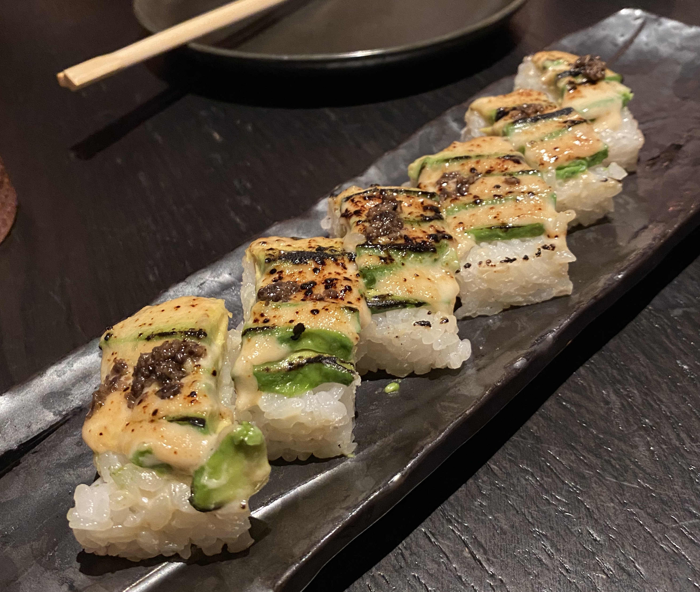

Vegan sushi? Count me in! The 100% vegan, Asian inspired menu offers everything from sushi to dumplings and noodles. I am not vegan, and you certainly don’t have to be to enjoy the rich flavors of Planta Queen. What could be better than eating sushi while also getting in a healthy plant-based meal? Must try item: Torched and pressed $16.75
This lively restaurant will not disappoint with large portions and rich taste. The ambience is very vibrant and welcoming for people of all ages, making it a perfect spot to get a bite to eat with your family. There is plenty of outdoor seating in cute private areas, so it is a great place to get some fresh air. Must try item: Garganelli $23
Lola Taverna looks like a place that should be located on a Greek Island, but instead you can find it right in SoHo. It’s bright and bustling, making it hard to miss. The food is authentic and innovative. Although you can find most of the Greek classics on the menu, such as mezes and lamb chops, Lola Taverna truly breaks the mold with some of the most interesting dishes I have ever heard of. Be sure to sit outside under the canopy of flowers and vines for the full experience. Must try item: Chicken gyro bao buns $18
If you’re feeling really fancy and want to truly embody the elegance of New York City, I would recommend Carbone. The lighting is low lit, the waiters wear bow ties, and the interior is draped with red velvet. It is easy to see why this restaurant has one Michelin star. After seeing some of my favorite celebrities eat here, I knew I wanted to try it out. You never know who you will run into at Carbone. Must try item: Spicy rigatoni alle vodka $32